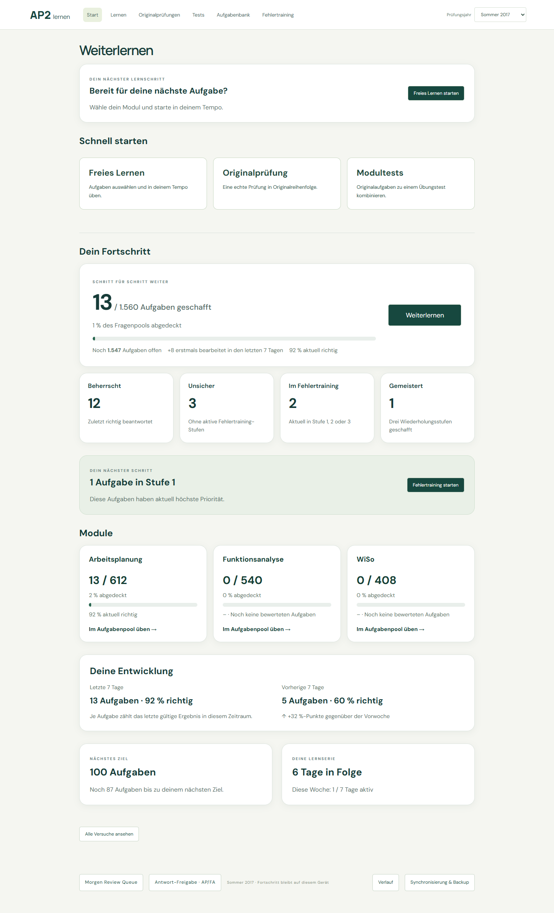
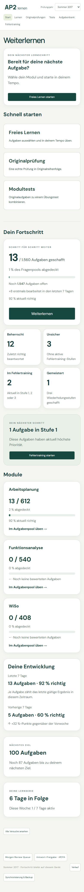
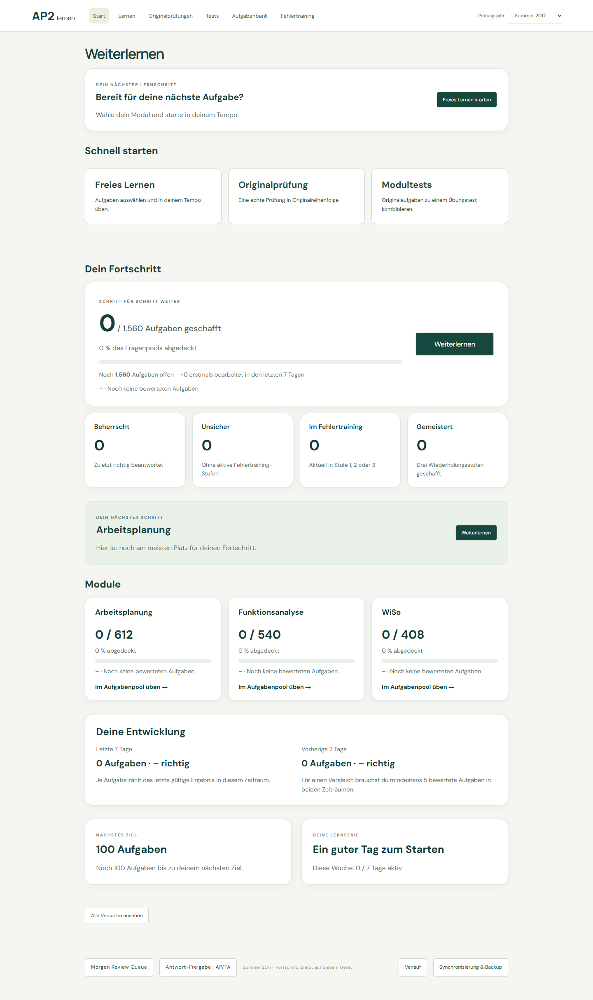

Weiterlernen → Schnell starten → Dein Fortschritt。统计只读，所有截图均为隔离浏览器中的演示数据，不代表用户个人成绩。



覆盖率唯一计数、latest result、部分正确、无效/废弃/删除测试、镜像 Attempt 去重、Unsicher 阶段去重、mastered、两段7天唯一题与最小5题、80%配置阈值、milestone、动态 registry 增减、输入不可变、IndexedDB只读无迁移/入队。浏览器验证模块筛选刷新、真实Stufe1启动、TrainingRun继续，以及真实考试继续/废弃/删除入口。